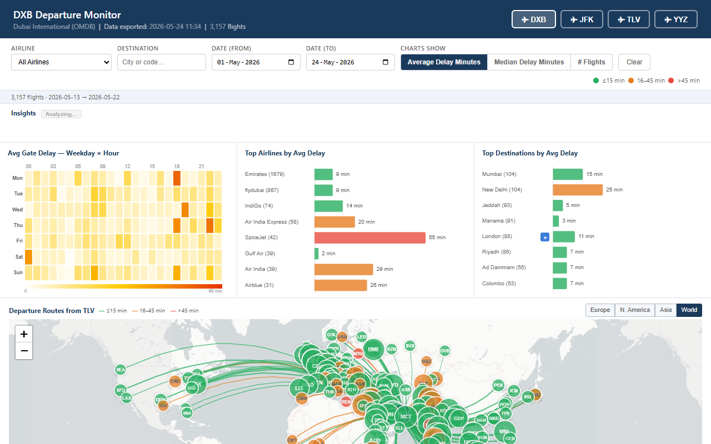
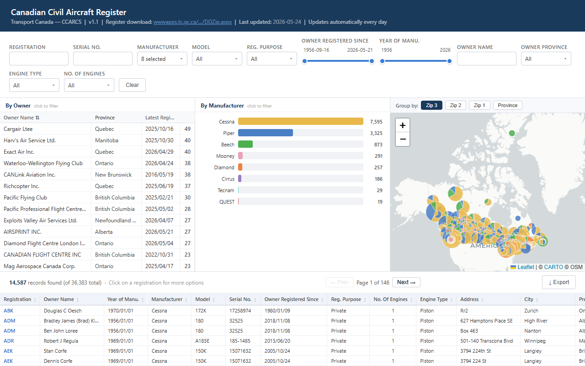

Flight Delays Dashboard
Multi-airport departure delay analysis across TLV, JFK, DXB and YYZ. Flight data collected automatically every two hours via the AeroDataBox API and visualized with interactive charts and a live map.
data visualizations & interactive dashboards

Multi-airport departure delay analysis across TLV, JFK, DXB and YYZ. Flight data collected automatically every two hours via the AeroDataBox API and visualized with interactive charts and a live map.

Tableau alternativeSearchable registry of 37,000+ Canadian civil aircraft. Adds a Leaflet map view, works without login, and loads faster than the public Tableau dashboard it replaces.